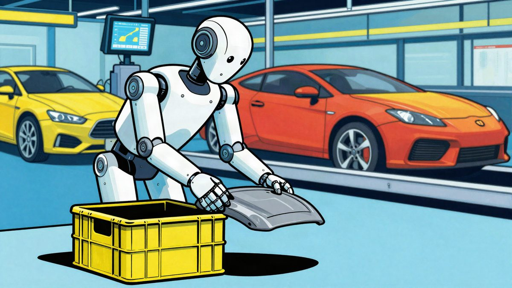

Xiaomijev humanoidni robot je odradio 8 sati u tvornici automobila

Lei Jun je objavio video na kojem Xiaomijev humanoidni robot u tvornici automobila odrađuje cijelu osmosatnu smjenu na sortiranju poklopaca središnje konzole. Ranije je robot mogao raditi najviše 3 sata zaredom. Test je još u tijeku, a robot je za sada prilično spor.
Xiaomijev humanoidni robot prvi je put odradio cijelu 8-satnu smjenu u tvornici Xiaomi automobila. Osnivač Xiaomija Lei Jun objavio je 4. studenoga na društvenoj mreži video s rezultatima najnovijeg testa.
Robot je radio na stanici za sortiranje bočnih poklopaca središnje konzole. Iz transportne kutije automatski uzima poklopce i umeće ih u susjedni sortirni stalak, a surađuje s ostatkom proizvodne linije. Test je trebao provjeriti može li robot raditi u stvarnim uvjetima, a ne samo na kratkim demonstracijama na sajmovima. U tvornici se mijenja dostava dijelova, a mijenja se i takt linije.
Test je još u tijeku, a robot je za sada prilično spor. Xiaomi vjeruje da će se brzina povećati daljnjom optimizacijom. Kao prednost ističu da robot ne osjeća monotoniju i može raditi 24 sata dnevno, što bi smanjilo opterećenje radnika.
Od 3 do 8 sati
Robot već neko vrijeme prolazi praksu u tvornici. U ranijoj fazi mogao je raditi samo 3 sata zaredom i obavljati jednostavne zadatke poput hvatanja matica i sortiranja poklopaca. Sada je trajanje izjednačeno s punim radnim vremenom radnika.
To je ipak samo test na jednoj stanici, a ne masovno uvođenje robota u cijelu halu. Za veću zamjenu ljudskog rada treba još riješiti troškove, pouzdanost i prilagodbu većem broju proizvodnih koraka.
Paralelno i u kućanstvu
Xiaomi istodobno razvija robote za kućne zadatke. Njegov embodied foundation model već je u probnom radu u Xiaomi Youth Apartmentu. Radi neprekidno više od 30 minuta, prolazi kroz tri sobe i obavlja više od 50 različitih zadataka, a pritom se skupljaju stvarni podaci o poslovima u kućanstvu.
Tehnologija je dobila i nagradu World Internet Conference za vodeću tehnologiju (Leading Science and Technology Award), a Xiaomi Group je primio i priznanje za izniman doprinos (Outstanding Contribution Award).
Xiaomi tako paralelno razvija industrijsku proizvodnju i kućne usluge. U tvornici radi na stabilnosti robota, a u stanu testira kućanske zadatke i skuplja podatke iz različitih okruženja.
Izvor: MyDrivers (快科技)
Povezani članci
 Japan razvija putnički avion od 5 Macha: Tokio–Los Angeles za oko dva sata9. studenoga 2026.
Japan razvija putnički avion od 5 Macha: Tokio–Los Angeles za oko dva sata9. studenoga 2026. AGIBOT je u Shanghaiju 24 sata testirao šest humanoidnih robota u trgovini, a dvojica nisu izdržala6. studenoga 2026.
AGIBOT je u Shanghaiju 24 sata testirao šest humanoidnih robota u trgovini, a dvojica nisu izdržala6. studenoga 2026. Fond je zaprimio oko 17.600 prijava za EV poticaje u sat vremena, natječaj se privremeno zatvara u podne5. studenoga 2026.
Fond je zaprimio oko 17.600 prijava za EV poticaje u sat vremena, natječaj se privremeno zatvara u podne5. studenoga 2026.